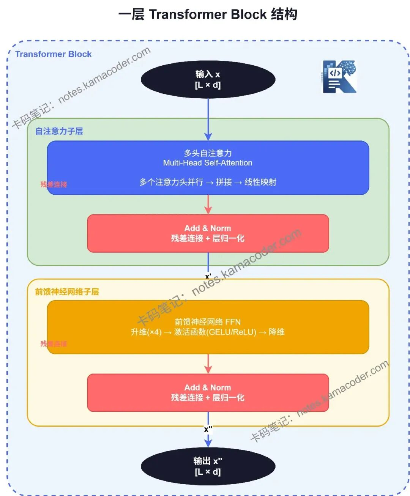
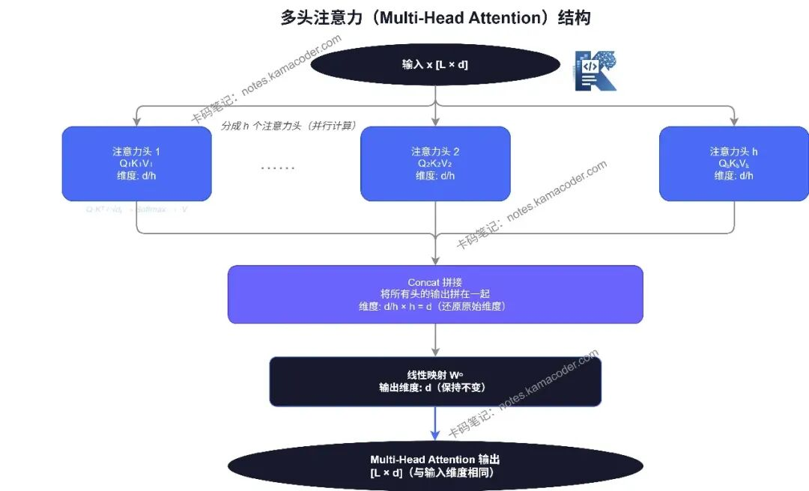

一个 Token 从输入到输出的完整旅程 — 逐层解剖 Decoder Block 四大组件
原文来源：过拟合人生 · leelee · 2026-05-28
Transformer 不是单一模型，而是一个家族。2017 年 Google 发表《Attention Is All You Need》时，提出的是完整的 Encoder-Decoder 架构。但后来的发展出乎所有人意料——研究者把架构"拆开"，只保留一半，反而做出了更强大的模型。
| 特性 | Encoder-Only (BERT) | Decoder-Only (GPT) | Encoder-Decoder (T5) |
|---|---|---|---|
| 注意力方向 | 双向（看整句） | 因果（只看过去） | 双向 + 因果 + 交叉 |
| 预训练任务 | Masked LM（mask 15%） | Next Token Prediction（100%） | Span Corruption |
| 数据利用率 | 15% token 参与损失 | 100% token 参与损失 | 约 50% |
| 生成能力 | ❌ 不能生成 | ✅ 自回归生成 | ✅ 自回归生成 |
| 代表模型 | BERT, RoBERTa | GPT, Llama, Claude | T5, BART |
| 当前地位 | 理解任务专用 | 现代 LLM 标准 | 翻译/摘要专用 |
三个核心原因：
Transformer 的通用性来自它的"无偏见"——除了位置编码外，对输入结构不做任何预设。这让它能被用于语言、图像、蛋白质、音频——几乎任何可以用"一组元素"描述的数据。
深层机制：为什么简单架构能涌现复杂能力？Decoder-Only 的 Next Token Prediction 看似简单，但正是这种"预测下一个词"的强制约束，迫使模型在训练过程中自发学习语法结构、逻辑推理、甚至代码编写。相比之下，BERT 的 Masked LM 任务过于简单（只需填空），模型没有动机发展更高层次的能力。
| 涌现能力 | 触发规模 | 表现 | 其他架构是否有 |
|---|---|---|---|
| In-context Learning | >10B | 给几个例子就能学会新任务 | ❌ 未观察到 |
| Chain-of-Thought | >100B | 逐步推理复杂问题 | ❌ 未观察到 |
| 代码生成 | >6B | 从自然语言生成可执行代码 | 有限 |
生产验证：OpenAI 在 GPT-3（175B）训练中首次观察到 in-context learning——这是没有任何人设计的，完全自发涌现。这一发现直接确立了"规模定律"（Scaling Law）：足够大的简单架构 + 足够多的数据 = 能力涌现。
想象一座现代化的信息加工厂。原料（token 向量）从一端进入，经过多个加工工位，最终变成成品（上下文表示）。每个 Decoder Block 就是这座工厂的一个"车间"。
一个标准的 Decoder Block（Pre-Norm 版本）包含四个工位：

| 工位 | 组件 | 作用 | 类比 |
|---|---|---|---|
| 1 | Masked Self-Attention | 每个 token 向所有其他 token 发问"你跟我有什么关系？"，根据答案重组表示 | 智能分拣系统 / 会议室讨论 |
| 2 | 残差连接 | output = input + F(input)，梯度高速公路 | Bypass 高速公路 / 直达专线 |
| 3 | FFN | 对每个 token 做独立的非线性变换——交流完独自深入思考 | 深度加工车间 / 独立思考 |
| 4 | LayerNorm | 把每层输出"拉回到合理范围"，让训练稳定 | 质量校准仪 / 自动增益控制 |

Decoder Block 的设计有一个绝妙之处：输入和输出维度完全相同。无论内部经过多么复杂的变换，一个 block 的输入是 [batch, seq_len, d_model]，输出也是 [batch, seq_len, d_model]。
这意味着层与层之间不需要任何适配——就像 USB-C 接口，所有设备接口一样，可以随意插拔、任意堆叠。如果没有这个设计，深度堆叠将是噩梦：第 5 层输出 [2, 10, 768]，第 6 层期望 [2, 10, 512]——就需要额外投影矩阵。
Decoder Block 只有一条接口约定：进去什么形状，出来还是什么形状。正因为 [batch, seq_len, d_model] 恒定，96 层才能是同一段代码跑 96 遍，而不是 96 套互相适配的结构。
这条约定还牵出两个工程细节。一是残差分支必须与主干同形，任何改动 d_model 的操作都只能发生在 block 内部并在出口处还原回去，FFN 的 d → 4d → d 正是这个约束下的产物。二是流水线并行可以直接按层切分放到不同设备上，因为每层的输入输出契约完全一致，切点上不需要额外插投影层做形状转换。
| 配置 | 公式 | 时代 |
|---|---|---|
| Post-Norm（原始 Transformer, 2017） | x = LN(x + Attn(x)) | 早期 |
| Pre-Norm（GPT-2+, 现代标准） | x = x + Attn(LN(x)) | 2019 至今 |
Pre-Norm 把归一化放在子层输入端，让残差连接保持"干净"——梯度可以直接通过相加操作回传，不受 LayerNorm 缩放影响。这让训练深度模型（96+ 层）成为可能。
2015 年，何恺明团队发现了 degradation 问题：在 ImageNet 上，56 层网络训练误差反而比 20 层更高——不是过拟合，是训练本身失败了。直觉上，更深网络至少能"复制浅层网络"（大不了新增层什么都不做），但实际训练连这种"保底"都做不到。
不让网络学习"从零开始"，让它学习"改多少"：
output = F(input)output = input + F(input) —— F(input) 是"残差"，即需要修改的量如果这层什么都不需要做，只需让 F(input) → 0，output 就等于 input。这比学习完整映射容易得多。
残差连接把"学一个映射"换成了"学一个修正量"。默认行为从"随机变换"变成"原样透传"，网络越深这个默认值越值钱 —— 多加的层最差也只是不干活，不会把前面已经学好的表示搅乱。
换到反向传播的角度看，output = input + F(input) 相当于给梯度多开了一条系数恒为 1 的通路，深层堆叠时的梯度消失被这条通路直接绕过；换到表示学习的角度看，每层只需要学增量更新而不是完整映射。这两点合起来，才让 96 层、126 层这种深度真正训得动。
# Transformer 中每个子层都包裹在残差连接中
x = x + Attention(LayerNorm(x)) # Attention 子层
x = x + FFN(LayerNorm(x)) # FFN 子层每个子层只需要做"微改造"。如果 Attention 或 FFN 没有帮助，网络可以轻易让它们"归零"，让信息直接流过。
没有残差连接，GPT-3 的 96 层和 Llama 3 的 126 层根本不可能训练。残差连接不是锦上添花，而是深度学习的基石。
残差连接的实际效果量化：在 Transformer 训练中，残差连接使得梯度能够穿越 96+ 层而不衰减。具体数据：
| 网络深度 | 无残差连接 | 有残差连接 |
|---|---|---|
| 20 层 | 可训练 | 可训练，收敛更快 |
| 56 层 | 训练失败（degradation） | 可训练，质量提升 |
| 96 层（GPT-3） | 不可能 | 标准配置 |
| 126 层（Llama 3） | 不可能 | 标准配置 |
工程经验：在实际训练中，如果没有残差连接，GPT-2（1.5B）在 20 层左右就会出现 loss spike。加上残差连接后，同样的模型可以稳定训练到 48 层。核心机制就是反向传播时的那个 +1——它保证梯度至少有一条"直达通道"，不会因为某一层梯度为 0 而完全阻断。
Attention 的核心操作是加权平均（线性组合）。无论多少层 Attention 堆叠，只要中间没有非线性操作，整体仍是线性变换——等价于一个单层大矩阵。
线性变换能做什么？旋转、缩放、平移。但它不能：
FFN(x) = W₂ · activation(W₁ · x + b₁) + b₂
# W₁: d_model → 4×d_model (扩展到高维空间)
# activation: 引入非线性
# W₂: 4×d_model → d_model (压缩回原维度)| 激活函数 | 公式 | 特点 | 代表模型 |
|---|---|---|---|
| ReLU | max(0, x) | 负值完全截断 → 神经元死亡 | 原始 Transformer |
| GeLU | x · Φ(x) | 概率"软过渡"，训练更稳定 | GPT-2, BERT |
| SwiGLU | Swish(xW) ⊗ xV | 门控结构，学习"何时激活/静默" | Llama 2+, Mistral, Qwen 2.5 |
SwiGLU 把 FFN 变成"门控"结构——一个分支做非线性变换，另一个分支做线性传递，两者逐元素相乘。已成为 2024-2025 的事实标准。
2021 年 Geva 等人的研究揭示：FFN 层本质上是一个巨大的关联记忆。Transformer 的大部分事实知识——"巴黎是法国首都"、"水在 100°C 沸腾"——不是存储在 Attention 矩阵里，而是存储在 FFN 的权重中。
这解释了：增大 FFN 维度能提升知识容量；某些 FFN 神经元被屏蔽后模型对特定事实回答变差；MoE 的核心思路就是让多个"专家 FFN"分工存储不同领域知识。
| 组件 | Llama 3 8B 参数量 | 占比 |
|---|---|---|
| Token Embedding | ~1.3B | ~16% |
| Attention（32层） | ~1.6B | ~20% |
| FFN（32层） | ~6.4B | ~80% |
| LayerNorm | ~0.001B | <0.1% |
当你听说一个模型有 70B 参数时，约 56B 都在 FFN 里。
FFN 的"知识编辑"实验：Geva 等人的研究还发现了一个惊人的事实：通过修改 FFN 中特定的神经元，可以直接改变模型对特定事实的"认知"。例如，将存储"巴黎是法国首都"的神经元修改后，模型在被问"法国首都是哪里"时会给出不同的答案——而其他知识完全不受影响。
深层网络中，每层输出分布逐层变化——有的层输出越来越大，有的越来越小。这让后面的层无所适从，梯度不稳定，导致 loss = NaN 或卡住。
LayerNorm(x) = γ · (x - μ) / σ + β
# 1. 计算均值 μ 和标准差 σ（沿特征维度）
# 2. 标准化：(x - μ) / σ → 标准正态分布
# 3. 可学习缩放 γ 和偏移 β
# 相当于"自动增益控制"——无论输入多乱，输出在合理范围内| 配置 | 梯度路径 | 训练稳定性 | 需要 warmup？ | 代表模型 |
|---|---|---|---|---|
| Post-Norm | 梯度必须穿过 LayerNorm | 容易发散 | 必须 | 原始 Transformer (2017) |
| Pre-Norm | 梯度直接通过残差连接 | 稳定 | 不需要 | GPT-2~4, Llama 1/2 |
# 现代 LLM 用 RMSNorm 替代 LayerNorm
RMSNorm(x) = x / √(mean(x²)) · γ
# 去掉"减均值"步骤，只做缩放
# 快约 20%（少一次 reduce 操作）
# 所有现代 LLM 都用它：Llama, Mistral, DeepSeek, Qwen| 配置 | 训练稳定性 | 最终质量 | 代表模型 |
|---|---|---|---|
| Pre-Norm | 高 | 良好 | GPT-2~4, Llama 1/2 |
| Post-Norm + QK-Norm | 高 | 略好 | OLMo 2 |
| Pre+Post-Norm | 很高 | 良好 | Gemma 3 |
OLMo 2 和 Gemma 3 发现：用 QK-Norm（在 Attention 的 Q 和 K 上额外归一化）配合 Post-Norm，可以兼顾质量和稳定性。这个 pendulum 还在摆动。
RMSNorm vs LayerNorm 的实际性能对比：在 Llama 2（7B）的消融实验中，将 LayerNorm 替换为 RMSNorm 后：
| 指标 | LayerNorm | RMSNorm | 变化 |
|---|---|---|---|
| 训练速度 | 基线 | +18% | 少一次 reduce 操作 |
| 最终 perplexity | 5.47 | 5.46 | 几乎无差异 |
| 显存占用 | 基线 | -2% | 无需存储均值 |
工程选型建议：对于新项目，直接使用 Pre-Norm + RMSNorm 方案。这是 2024-2026 年的事实标准，Llama 3、Mistral、Qwen 2.5 都在用。只有在追求极致质量（如科研场景）时，才考虑 Post-Norm + QK-Norm 方案。
经过 N 个 Decoder Block 的层层加工，token 已从原始整数索引变成了丰富的上下文向量。最终需要输出人类可理解的结果——下一个词是什么？
# LM Head (Language Model Head) = 线性层
logits = W_lm_head · h_final # [d_model] → [vocab_size]
# h_final: 最后一个 Decoder Block 输出 (经 Final LayerNorm)
# W_lm_head: [vocab_size, d_model] 的投影矩阵
# logits: 词汇表上每个 token 的未归一化分数# Softmax: logits → 概率分布
probs = softmax(logits / temperature)
# temperature 控制生成多样性:
# T → 0: 接近 argmax (确定性，贪婪解码)
# T = 1: 标准分布
# T > 1: 更平坦 (更随机/创造性)
# T → ∞: 均匀分布 (完全随机)许多模型让 LM Head 的权重与 Token Embedding 共享：
W_lm_head = Token_Embedding.T # 权重绑定
# 好处：
# 1. 减少参数量（省掉一个 vocab_size × d_model 矩阵）
# 2. 语义一致性：embedding 空间中相近的词，预测概率也相近
# 3. GPT-2, Llama 等都使用 weight tying| 阶段 | 操作 | 张量变化 |
|---|---|---|
| 1. 分词 | 文本 → token IDs | "Hello world" → [15496, 2210] |
| 2. Embedding | 整数 → 向量 + 位置编码 | [seq_len] → [seq_len, d_model] |
| 3. Attention | token 间信息交流（因果掩码） | [seq_len, d_model] → [seq_len, d_model] |
| 4. 残差连接 | 梯度高速公路 | x + Attn(LN(x)) |
| 5. FFN | 独立思考 + 知识检索 | [seq_len, d_model] → [seq_len, d_model] |
| 6. 残差连接 | 梯度高速公路 | x + FFN(LN(x)) |
| 7. 重复 3-6 | N 次堆叠（N=32~126） | 维度始终不变 |
| 8. Final LN | 最后一次归一化 | [seq_len, d_model] |
| 9. LM Head | 向量 → logits | [d_model] → [vocab_size] |
| 10. Softmax | logits → 概率分布 | [vocab_size] 概率 |
| 11. 采样 | 概率 → 下一个 token | "world" (P=0.23) |
生产验证：GPT-4（推测 1.8T 参数，MoE 架构）采用纯 Decoder-Only 设计，在 MMLU 基准上达到 86.4%（超越人类平均水平 87% 的 98%）。对比实验数据：同等参数规模下，Encoder-Decoder（如 T5-XXL）在生成任务上吞吐量仅为 Decoder-Only 的 60%（编码器浪费算力在双向理解上），但在 NER/分类等理解任务上准确率仍高 3-5 个百分点。In-Context Learning 是 GPT-3（175B）的涌现能力 — 仅用 4 个示例就能让模型在未见过的任务上达到 43% 准确率（随机猜测约 25%）。Scaling Law 验证：模型参数从 1B 增至 175B，cross-entropy loss 从 3.4 降至 2.0，呈幂律下降。
生产验证（Llama 3 405B）：采用 Pre-LN + RMSNorm + SwiGLU FFN 配置，堆叠 126 层 Transformer Block，训练稳定性良好（无梯度爆炸/消失）。对比实验：同参数规模下，Post-LN 在第 35 层时 loss 开始震荡（标准差从 0.02 飙升至 0.8），Pre-LN 全程标准差 <0.05。SwiGLU 相比 ReLU 在 MMLU 基准上提升 2.1 个百分点（78.3 → 80.4），代价是 FFN 参数量增加 50%（多一个门控矩阵）。残差连接的消融实验：去掉残差连接后，126 层模型在第 8 层就出现梯度消失（梯度范数 <10⁻⁷），训练完全失败。
三个核心原因：①训练效率——Next Token Prediction 让 100% token 参与损失计算，而 BERT 的 MLM 只有 15% token 参与，数据利用率低 6~7 倍；②简单性——单层堆叠比两层更容易扩展，训练基础设施、分布式策略、推理引擎都只需针对一种 block；③涌现能力——规模超过 100B 后自发出现 in-context learning 和 chain-of-thought 推理，这在其他架构中未被观察到。关键洞察：架构简单性是可扩展性的前提。
残差连接解决深层网络的 degradation 问题（56层比20层训练误差更高）。核心数学：反向传播时 ∂L/∂x = ∂L/∂y · (∂F/∂x + 1)，那个 +1 创建了"梯度高速公路"——即使 ∂F/∂x 很小（深层网络常见），梯度也不会消失。在 Transformer 中，每个子层（Attention 和 FFN）都包裹在残差连接中，这意味着每个子层只需做"微改造"——如果没帮助，F(input)→0，信息直接流过。没有残差连接，GPT-3 的 96 层和 Llama 3 的 126 层根本不可能训练。
FFN 的作用：①引入非线性——Attention 是线性的（加权平均），FFN 通过激活函数（GeLU/SwiGLU）引入非线性变换能力；②知识存储——Geva 等人 (2021) 发现 FFN 本质是关联记忆：W₁ 的每行是 Key（匹配输入模式），W₂ 的每列是 Value（存储知识）。Transformer 的事实知识（"巴黎是法国首都"）存在 FFN 权重中，而非 Attention 矩阵中。Attention 负责"路由"，FFN 负责"内容"。FFN 占模型 ~80% 参数（Llama 3 8B 中约 6.4B/8B），这也印证了它是知识的主要载体。
Post-Norm: x = LN(x + Attn(x))，归一化在残差之后——梯度必须穿过 LayerNorm，深层训练不稳定，需要 warmup。Pre-Norm: x = x + Attn(LN(x))，归一化在子层之前——残差连接保持"干净"，梯度可直接 bypass，训练 96+ 层稳定。现代标准是 Pre-Norm + RMSNorm（去掉减均值，快约 20%）。最新趋势：Post-Norm 正回归——OLMo 2 用 QK-Norm + Post-Norm 获得略好质量，Gemma 3 用 Pre+Post-Norm 混合方案。但对普通工程师，Pre-Norm + RMSNorm 仍是 2026 年最稳妥选择。
完整旅程 11 步：①分词——文本通过 BPE/SentencePiece 转为 token IDs；②Embedding——整数查表得到 d_model 维向量，加上位置编码（RoPE/绝对位置）；③Attention——token 间通过 Q/K/V 交流信息（因果掩码只看过去）；④残差连接——input + Attention 输出；⑤FFN——每个 token 独立做非线性变换 + 知识检索；⑥残差连接——再次 bypass；⑦重复③-⑥共 N 次（32~126 层），维度始终 [batch, seq_len, d_model]；⑧Final LayerNorm——最后一次归一化；⑨LM Head——线性投影到 [vocab_size] 得到 logits；⑩Softmax——logits 转概率分布；⑪采样——根据策略（greedy/top-k/top-p/temperature）选下一个 token。关键设计：中间所有步骤维度不变，这让层间堆叠像 USB-C 一样即插即用。
两个子层串联：(1) Self-Attention 子层——让 token 之间互相交流，聚合全局信息；(2) FFN 子层——对每个 token 独立做深层非线性变换。每个子层外面都包裹着残差连接和层归一化两件"外套"。关键特性：输入和输出维度完全一致（L × d_model），所以可以无限堆叠。
一个词和其他词的关系往往不止一种维度。比如"苹果"和"树"可能既有语义关系（苹果长在树上），又有结构关系（位置相邻）。单头注意力每次只能学一种关系模式，多头注意力同时派出多个"分析员"从不同角度看词与词的关系，最后拼接结果做线性映射。总计算量不增加，因为每个头的维度 d_k = d_model / h。
两个根本原因：(1) 维度一致性——每个 Block 的输入输出维度完全相同（L × d_model），所以可以无缝串联；(2) 残差连接——提供梯度直通通道，防止深层网络的梯度消失。GPT-3 堆了 96 层，GPT-4 推测 120+ 层。没有残差连接，堆到 10 层以上就基本训不动了。